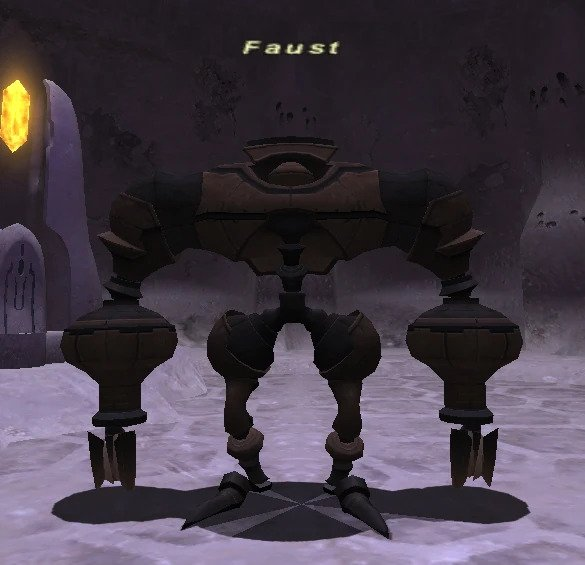

Level 75 reference · Zenith rules
|
Job: Notorious Monster |
 Image source |


|
Zone |
Level |
Drops |
Steal |
Spawns |
Notes | ||||||
|
83-85 |
1 |
| |||||||||
|
HP = Detects Low HP; M = Detects Magic; Sc = Follows by Scent; T(S) = True-sight; T(H) = True-hearing JA = Detects job abilities; WS = Detects weaponskills; Z(D) = Asleep in Daytime; Z(N) = Asleep at Nighttime | |||||||||||
 Image source
Image source
Notes:
- Spawn at (F-11) on the fourth map approximately every 3-6 hours.
- He will just stand in the middle of the room and watch through the two hallways, turning every few seconds. It's possible to stand behind him all the time and use the Monolith-switch behind him, since he only watches into the gangways without moving.
- Killable by: 12 characters level 70+, 5 characters level 75.
- Has increased movement speed when chasing a target.
- Special Attacks: Typhoon (uses this move almost constantly)
- Recommended PLD tank, Typhoon can take multiple shadows every time, thus making it very difficult for a NIN to tank Faust.
Adapted from Eden Wiki: Faust · Contributors and history · CC BY-SA 4.0. Revision 1925. Layout, links and optional background text adapted for Zenith.